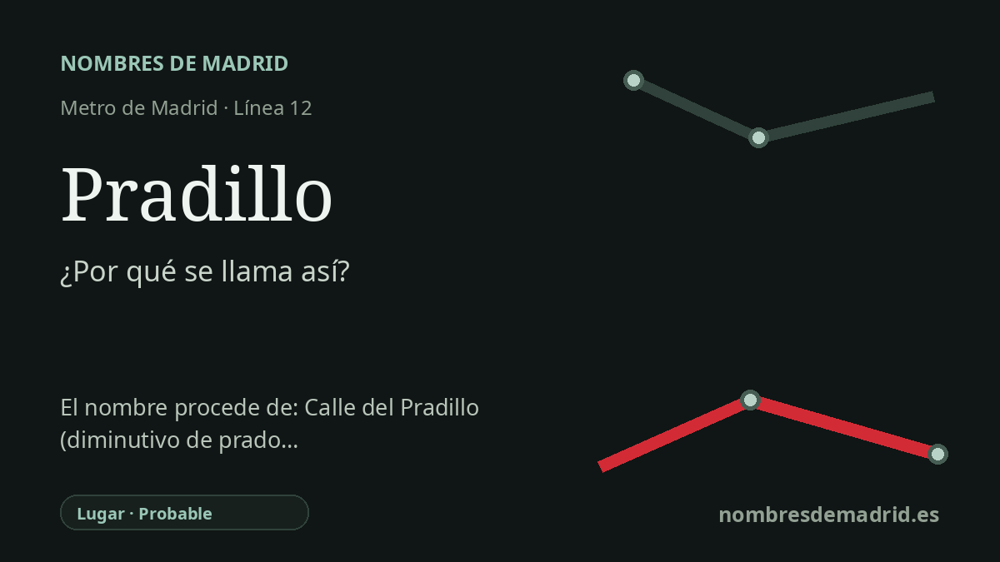

Publicado el · Investigación de Nombres de Madrid · Cómo verificamos cada origen · 8 fuentes consultadas
Respuesta rápida
La estación de Pradillo toma su nombre de la Plaza del Pradillo, en el casco antiguo de Móstoles. El topónimo procede de pradillo, diminutivo de prado, es decir, un pequeño prado o espacio abierto ameno.
La historia del nombre
La estación de Pradillo toma su nombre de la Plaza del Pradillo, el espacio público situado junto a la estación en el casco antiguo de Móstoles. La Comunidad de Madrid ubica la parada de MetroSur en el centro histórico, bajo una zona de parque entre las calles Agustina de Aragón, Dos de Mayo y Mártires, lo que encaja con el nombre de la plaza y no con una dedicatoria personal.
La palabra antigua que hay detrás del nombre es prado, definida por la Real Academia Española como tierra húmeda o de regadío donde se deja crecer o se siembra hierba para el ganado, y también como sitio ameno que sirve de paseo en algunas poblaciones. La RAE indica su origen en el latín pratum. Pradillo es el diminutivo normal: literalmente, un prado pequeño, aunque en la toponimia urbana suele conservar el recuerdo de un espacio abierto o verde.
La historia pública documentada del lugar habla tanto de terreno abierto como de agua. El Ayuntamiento de Móstoles explica que en 1851 se proyectó una fuente en el Pradillo, descrito como un sitio espacioso y céntrico de la villa, y que la Fuente de los Peces se inauguró en la primavera de 1852. Esa noticia municipal confirma que el nombre Pradillo ya se usaba a mediados del siglo XIX.
La plaza es además uno de los espacios cívicos simbólicos de Móstoles. MonumentalNet la describe como el lugar tradicionalmente más concurrido de la población, y el catálogo municipal recoge en la Plaza del Pradillo el monumento a Andrés Torrejón, inaugurado en 1908 con motivo del centenario del levantamiento de 1808. Cuando MetroSur abrió el 11 de abril de 2003, la estación incorporó ese topónimo local al mapa regional del metro.
La explicación más concreta sobre nombres anteriores es verosímil, pero no queda cerrada con fuentes primarias abiertas. Wikipedia y el hilo de historia local que cita afirman que la plaza aparece en documentos del siglo XVI como Plaza del Perezal, Pedreçal o Plaza de Abajo del Perezal, y que en la primera mitad del siglo XVIII ya se cita como Pradillo del Caño. Como solo se han consultado rastros secundarios de esa afirmación, la confianza recomendada es probable, no plenamente verificada, para esas formas tempranas.